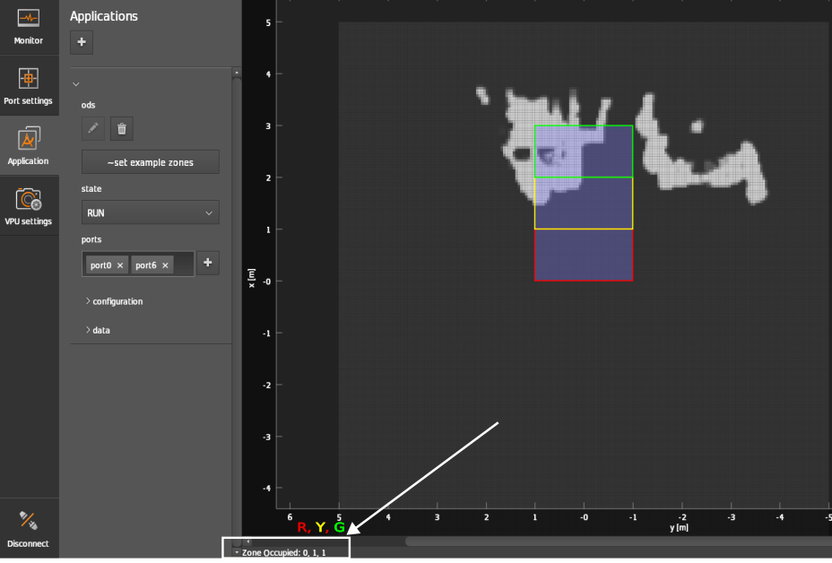

Zones
Description
Parameters
A zone maps the probability information of all grid cells within the zone extent to a binary value: true means that an object is detected, false that no object is detected.
This mapping is based on the internally computed convex hull (2D) of the user input zoneCoordinates and the maxHeight parameter.
Additionally, the minObjectHeight parameter allows you to edit the expected minimum object height above the ground (Z==0 plane) per camera. The minObjectHeight parameter is handled on a per-camera basis to allow fine tuning for multi-camera setups with different camera mounting heights. For higher mounted cameras the minObjectHeight can be lower compared to lower mounted cameras to allow the user to see further away and lower objects relative to the floor plane.
The maxHeight parameter is a global parameter for all zones. The 3D extent (maximum) limits along the vertical axis are therefore the same for all zones.

Zone extent
The 3D zone extent is defined via the 2D (convex) hull of the points in space as defined by the list zoneCoordinates. Its volume is handled via the combined maxHeight parameter and minObjectHeight parameters. If configured, overhanging loads will also be taken into account.
Number of zones
An ODS application is limited to a maximum of three zones.
Output
The Output of the Zones is contained in buffer_id.O3R_ODS_INFO, which is formatted as follows:
Name |
Type |
Description |
|---|---|---|
|
uint64 |
timestamp of occupancy grid in nanoseconds - NTP time if NTP server is synchronized |
|
int8[3] |
a flag for each zone describing whether it is occupied or free |
|
uint32 |
the user-defined ID for the zone configuration |
The output of the zones can be easily deserialized, for more information please visit the ifm3d deserializer documentation.
You can also view the zones’ output at the bottom left corner of the Application window as shown in the below figure.

Timestamp
Every ODS frame also contains a timestamp in nanoseconds. If a NTP-server is provided, the timestamp is synchronized. Learn more about timestamps in the timestamps documentation.
zoneConfigID
The user-defined ID for the currently used zone configuration.
zoneOccupied
One zone state information for all zones: this is always an array of 3 elements independently of if 3 or less zones have been configured.
Examples
Only one zone
{
"zoneCoordinates": [[[1.0,1.0], [1.0,0.0], [-1.0, 0.0], [-1.0, 1.0]]]
}
The JSON shown here is the convex hull of one zone (2D on the ground plane). The width (lateral size, that is in Y-direction) is 2 m. The length (longitudinal size, that is in X-direction) is 1 m.
Three zones
{
"zoneCoordinates": [
[[0,1],[1,1],[1,-1],[0,-1]],
[[1,1],[2,1],[2,-1],[1,-1]],
[[2,1],[3,1],[3,-1],[2,-1]]
]
}
Example output
In FW 0.16.23 and FW 1.0.14 the configuration and output of zones is limited to three zones.
The user can set up-to 3 zones at a time. Trying to set 4 zones in the JSON configuration will result it a JSON schema error: ifm3d / ifm3dpy custom error.
The zone evaluation output is also limited to three zones. Independently of how many zones are configured, one zone output is a vector of three elements. The first element pertains to the first zone, the second element to the second zone, etc.
The example array below shows the output of 10 consecutive frames buffered into one array.
array([[1, 1, 1, 1, 1, 1, 1, 1, 1, 1],
[0, 0, 0, 0, 0, 0, 0, 0, 0, 0],
[0, 0, 0, 0, 0, 0, 0, 0, 0, 0]], dtype=uint8)